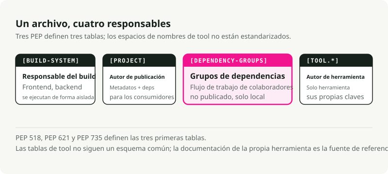
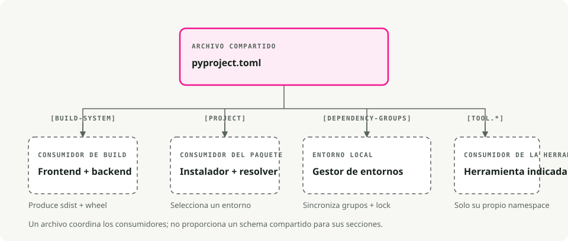
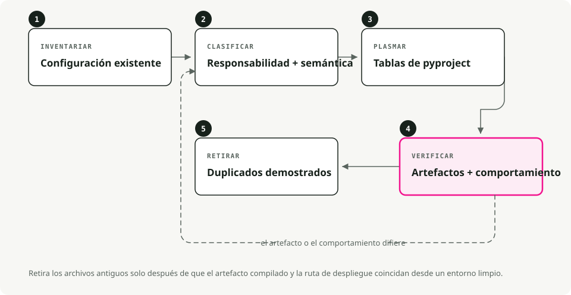

Traducción automática
Este artículo se tradujo automáticamente a partir de la versión original en inglés.
pyproject.toml Guía: Empaquetado de Python, dependencias y configuración de herramientas
Si alguna vez has abierto un proyecto en Python e intentado averiguar dónde se encuentran realmente las dependencias, los parámetros de compilación y las configuraciones de las herramientas, conoces bien ese problema. setup.py, setup.cfg, requirements.txt, MANIFEST.in, además de un puñado de archivos .dotfile para cada lintador y formateador, todos los cuales leen desde ubicaciones diferentes.
pyproject.toml reduce la mayor parte de ese contenido a un único archivo.
Resumen rápido
pyproject.toml es aproximadamente el package.json para Python. Un archivo contiene la metadatos del proyecto, las dependencias y la configuración de las herramientas. Ya sea que estés utilizando .venv, pyenv, o uvAl colocar todo aquí, se facilita la configuración y la colaboración.
¿Qué es? pyproject.toml¿?
Es un archivo de configuración que se encuentra en la raíz de tu proyecto Python, escrito en TOML (puedes pensar en él como archivos INI, pero con una especificación formal). Dos PEPs han determinado su funcionamiento actual: PEP 518 (2016) introdujo el [build-system] Una tabla que permita a las herramientas de construcción declarar sus requisitos de forma estandarizada. PEP 621 (2020) añadió el [project] tabla con los metadatos del paquete principal: nombre, versión, dependencias, cosas por el estilo.
Hoy en día, la mayoría de las herramientas de Python (Black, isort, pytest, Ruff, mypy) leen su configuración desde [tool.*] secciones en este archivo.

Por qué es importante
Menos archivos de los que ocuparse
Un proyecto heredado típico gestionaba al mismo tiempo setup.py, setup.cfg, requirements.txt, MANIFEST.in, y un conjunto de archivos dotfile (.flake8, .coveragerc, y similares). La mayoría de ellos se agrupan en un único lugar.
Compilaciones independientes del backend
Al ejecutarlo pip install ., pip lee pyproject.toml y instala las herramientas de compilación que necesite su proyecto: setuptools, flit, hatchling; elige la que prefiera. Ya no está atado a setuptools.
Un único lugar para la configuración de herramientas
Los analizadores de código, formateadores, ejecutores de pruebas y verificadores de tipos saben dónde buscar. Su IDE, su pipeline de CI y sus compañeros de equipo consultan el mismo archivo.

Anatomía de un pyproject.toml
Un archivo típico cuenta con tres secciones principales:
# 1. Build system - tells pip/build how to package your project
[build-system]
requires = ["hatchling"]
build-backend = "hatchling.build"
# 2. Project metadata and dependencies
[project]
name = "awesome-app"
version = "0.1.0"
description = "Short demo of pyproject.toml"
readme = "README.md"
requires-python = ">=3.12"
dependencies = [
"fastapi>=0.111",
"uvicorn[standard]>=0.30",
]
# Expose CLI commands
[project.scripts]
awesome-cli = "awesome_app.cli:main"
# Optional dependencies (e.g., for development)
[project.optional-dependencies]
dev = ["pytest", "ruff", "mypy"]
# 3. Tool configuration
[tool.ruff]
line-length = 100
target-version = "py312"
[tool.pytest.ini_options]
addopts = "-ra -q"
testpaths = ["tests"]
Desglose detallado
[build-system]
Es necesario si deseas empaquetar o distribuir tu proyecto. Indica a pip y a las herramientas de compilación (como python -m build) ¿Qué backend utilizar? [project]
Metadatos de tu paquete. Aquí es donde se almacenan las dependencias en lugar de requirements.txt.
dependencies: los requisitos de ejecución para tu paquete.optional-dependencies: grupos de dependencias adicionalesdev,test,docs).scripts: crea comandos ejecutables. En el ejemplo anterior, la instalación del paquete te proporciona unoawesome-clicomando que ejecutamainfunción enawesome_app/cli.py.
[tool.*]
Configuración para cualquier herramienta que la soporte. Cada herramienta dispone de su propio espacio de nombres: [tool.pytest.ini_options], [tool.mypy], [tool.ruff], y el resto.
¿Reemplaza a requirements.txt?
Para flujos de trabajo modernos, sí. Herramientas como Poesía, PDM, Hatcheado, y UV almacenar las dependencias directamente en el [project] Sección y generación de archivos de bloqueo para garantizar la reproductibilidad.
Probablemente sigas queriendo requirements.txt if:
- Estás trabajando con un sistema de despliegue heredado que lo exige.
- Posees un script de CI que aún no se ha actualizado.
La mayoría de las herramientas modernas pueden exportar uno desde el tuyo pyproject.toml cuando sea necesario:
uv export > requirements.txt
Elección del backend de compilación
El backend de compilación es una de las decisiones más confusas. Aquí tienes una comparación rápida:
| Backend | Mejor para | Ventajas | Cons |
|---|---|---|---|
| Cría | Estándar moderno | Rápido, escalable y compatible con plugins | Soporte más reciente y con menos compatibilidad con versiones antiguas |
| Flit | Paquetes simples | Extremadamente sencillo, sin configuración alguna. | No es adecuado para compilaciones complejas (extensiones en C). |
| Setuptools | Herencia, complejo | Soporta todo (extensiones C, etc.). | Más lento y con más configuración. |
| Poesía | Usuarios de Poetry | Integrado con el ecosistema de Poetry | Bloqueado en el flujo de trabajo de Poetry |
Para nuevos proyectos puramente en Python, Hatchling es una opción razonable por defecto. Es lo que uv init Escribe por ti.
Migrar un proyecto existente
Si dispones de un proyecto Python heredado, aquí te mostramos cómo modernizarlo:

- Añadir
[build-system]. Si no está seguro de qué backend utilizar, comience conrequires = ["setuptools>=61", "wheel"]2. Mover la metadatos a[project]. Transferir el nombre, la versión y las dependencias desdesetup.pyosetup.cfg3. Convertir las dependencias de desarrollo. Colócalas en[project.optional-dependencies].dev. - Configurar herramientas. Añadir
[tool.*]Secciones para Black, pytest, mypy, etc. - Decide qué hacer con
requirements.txt. O bien descárguelo, o générelo a partir de su archivo de bloqueo para los sistemas heredados que lo necesiten.
Después de la migración, por lo general puede eliminarlo. setup.py, setup.cfg, y la mayoría de esos archivos de configuración en formato .dotfile.
Algunas características útiles
Puntos de entrada de la CLI
En lugar del antiguo console_scripts bloqueo en setup.py, utilice [project.scripts]:
[project.scripts]
my-tool = "my_package.main:run"
Cuando alguien instala tu paquete, puede escribir my-tool en su terminal.
Espacios de trabajo (monorepos)
Herramientas como uv y hatch soporta espacios de trabajo, que permiten gestionar múltiples paquetes en un único repositorio:
[tool.uv.workspace]
members = ["packages/*"]
Podés desarrollar varios paquetes interdependientes e instalarlos todos en un mismo entorno virtual para realizar pruebas.
Flujos de trabajo típicos con uv
Iniciar un nuevo proyecto
uv init my_app # creates folder with pyproject.toml and .venv
cd my_app
uv add requests fastapi # adds to [project.dependencies] and installs
uv run pytest # runs tests in the venv
Ejecución de scripts
Podés definir scripts ya sea en pyproject.toml (utilizando un ejecutor de tareas como poe o hatch) o simplemente llama uv run:
uv run python main.py
Consejos prácticos
- No fije versiones exactas en las bibliotecas. Utilice rangos como
requests>=2.30Así, tu biblioteca no entrará en conflicto con cualquier otro componente instalado en el entorno de alguien. - Fija las versiones en las aplicaciones. Utiliza un archivo de bloqueo.
uv.lock,poetry.lock) para obtener compilaciones reproducibles. - Agrupe las dependencias de desarrollo. Mantenga las dependencias relacionadas con pruebas, validación de código y documentación en grupos opcionales separados.
dev,test,docs). - No incluya todas las opciones.
pyproject.toml. Asegúrate de seguir los valores predeterminados a nivel de proyecto y deja que los archivos de configuración específicos de la herramienta se encarguen del resto si la situación se vuelve compleja.
La verdadera ventaja de pyproject.toml Se trata principalmente de eliminar las pequeñas fricciones diarias. Dejas de buscar cuál archivo es el responsable de la compilación. La configuración del linter se encuentra junto a las dependencias. Pip y tu IDE finalmente coinciden sobre qué está instalado. Elige un backend de compilación e introduce tus dependencias en él. [project], y permite que tus herramientas lean desde un único lugar. Si estás comenzando de cero, uv init Te permite llegar casi hasta allí con una sola orden.
Conclusiones clave
pyproject.tomles el archivo de configuración central para los proyectos modernos en Python.- PEP 518 define los requisitos del sistema de compilación; PEP 621 define la metadatos del proyecto.
- Mantenga la configuración de las herramientas en
pyproject.tomlCuando la herramienta lo permite, pero no se debe forzar la inclusión de configuraciones no relacionadas en un único archivo. - Los archivos de bloqueo y los metadatos de compilación resuelven problemas distintos: instalaciones reproducibles frente a la identidad del paquete.
Referencias
- PEP 518 - Requisitos del sistema de compilación en
pyproject.toml. - PEP 621 - Metadatos del proyecto. Guía del usuario para el empaquetado en Python: pyproject.toml - configuración práctica del proyecto. Documentación del proyecto UV -
pyproject.tomlcon UV.